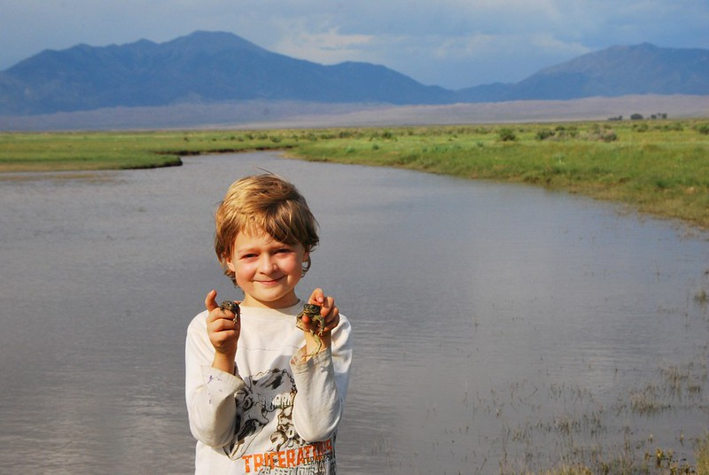
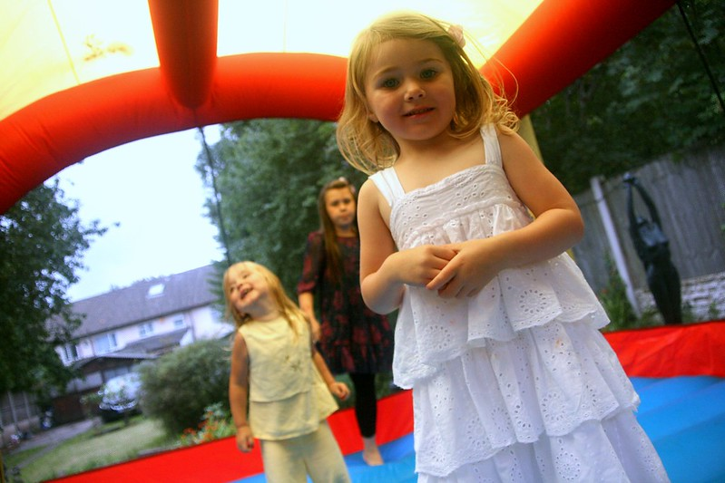

Why donate? Your donation can help us fund insulin needs for diabetics and families that need aid paying for their insulin, a daily need for diabetics. Insulin prices out of pocket can sum up to nearly $500-600 a month without the proper insurance. The daily struggle and worry that can come from just needing to pay for insulin, a DAILY need for a diabetic, can add up. So, help us help them.
We can sponsor up to eight diabetics and their families for roughly two years at a time, once the two years is up, we keep in contact to see how the aid has gone for them and what progress they have been through. Right now, we only have three candidates.
You are welcomed to donate right to our organization or choose one of our participants to pledge a donation too directly HERE
Madison Dickinson, a 32-year-old Springfield Native. She’s a fighter pilot for the US airforce and studied her undergrad at Millikin University. She just recently joined our program a few months ago and has been a type one diabetic for three years.
Timmy Oscar, an 8-year-old from Mt. Pulaski, IL. Timmy has been a diabetic for five years. He’s in 5th grade and goes to Mt. Pulaski Grade School. Timmy has been a part of our program for nine months.
Olivia Myers, a 6-year-old from Lincoln, IL. Olivia has been a type one diabetic for two years. She’s in 1st grade at West-Lincoln Broadwell. Olivia has been a part of our program for one year.